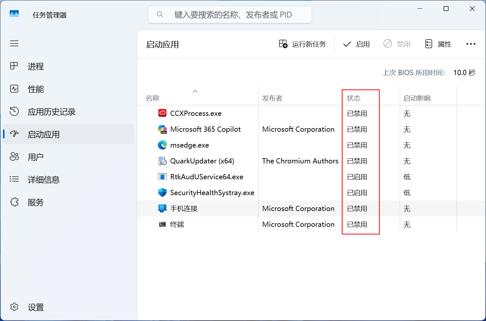
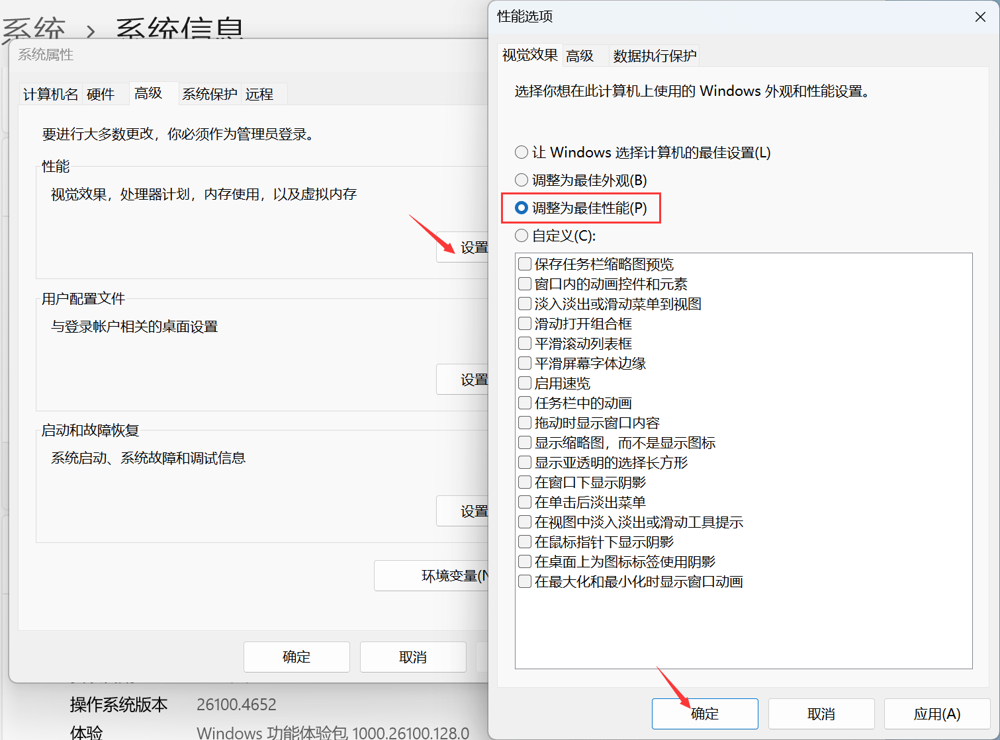
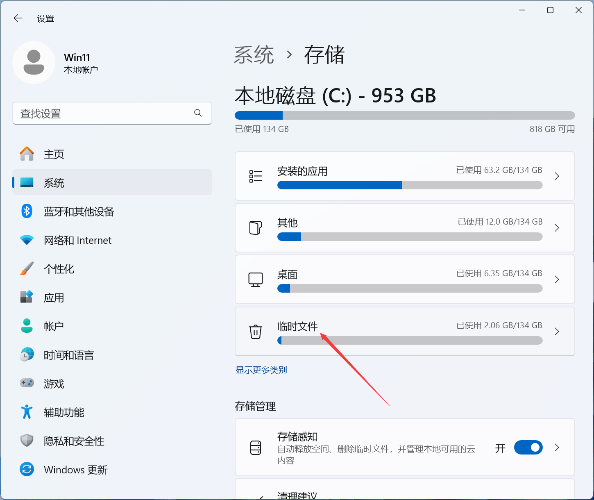
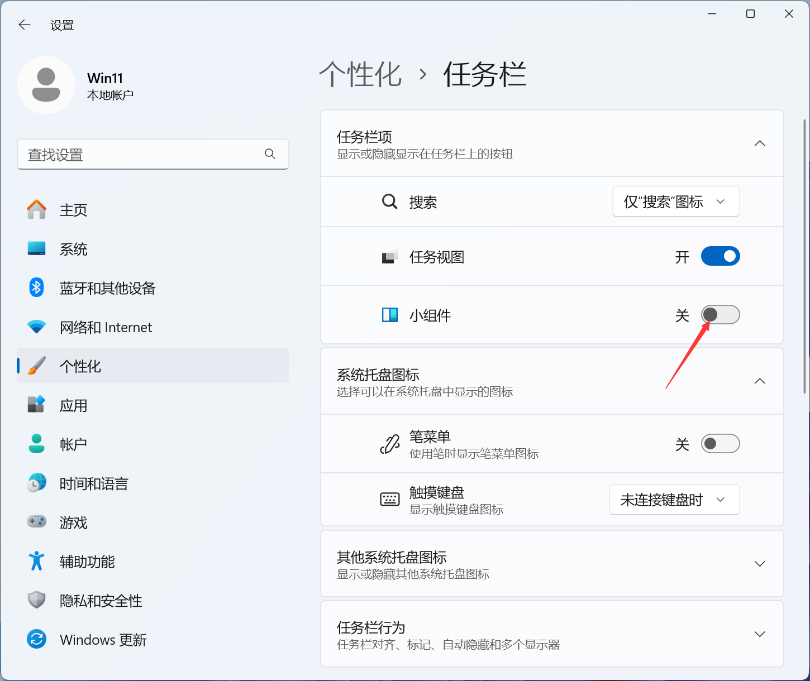
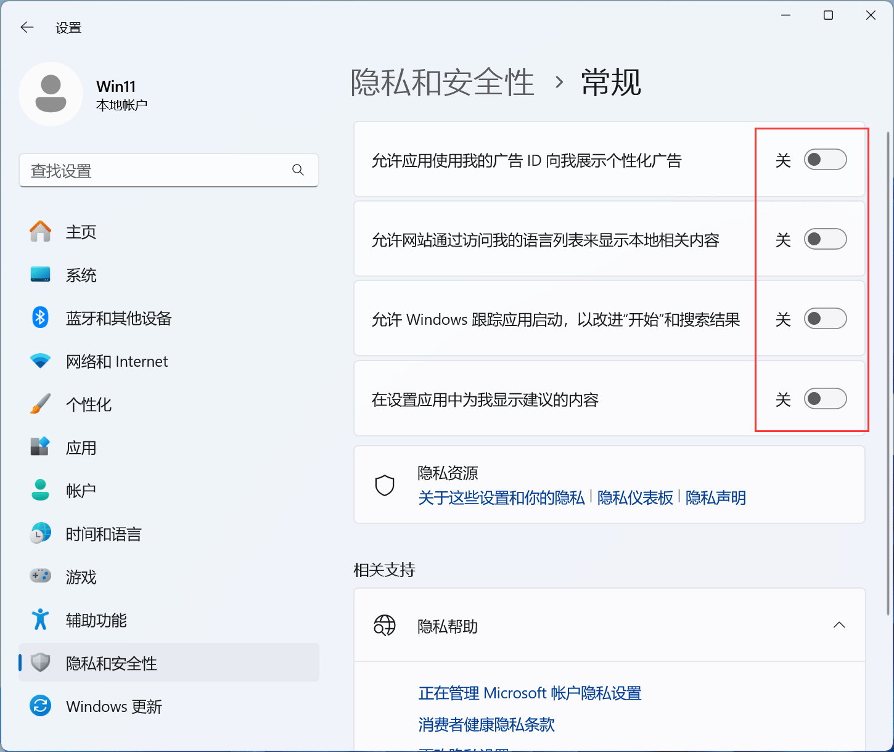
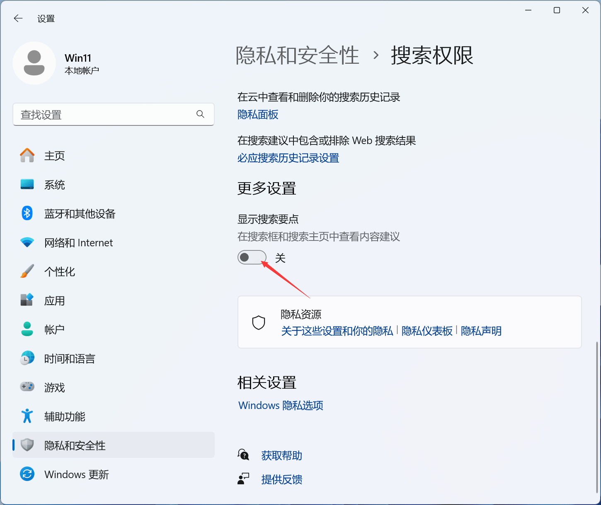
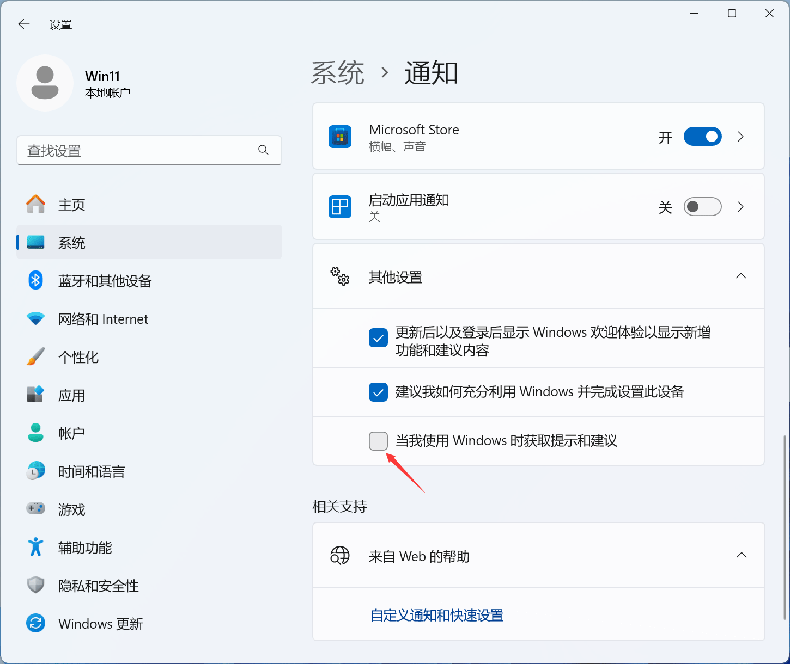

很多软件会在开机时自动启动。
按 Ctrl + Shift + Esc 打开任务管理器：进入 任务管理器 → 启动应用。
关闭不需要的软件，右键 → 禁用，这样可以 明显提升开机速度。

Windows 动画也会占用性能。
打开：设置 → 系统 → 系统信息 → 高级系统设置 → 性能 → 设置 → 选择：调整为最佳性能

Windows 长时间使用会产生大量垃圾。
打开：设置 → 系统 → 存储
点击：临时文件，删除：Windows 更新缓存、临时文件、回收站等
开启存储感知，作用是自动清理临时文件，自动清理回收站

Windows 11 默认开启 小组件。
打开任务栏设置：右键任务栏 → 任务栏设置
关闭：Widgets（小组件），这样可以减少系统资源占用。

进入：设置 → 隐私和安全 → 常规
关闭：个性化广告
进入：设置 → 隐私和安全 → 搜索权限
关闭：显示搜索要点
进入：设置 → 系统 → 通知
关闭：Windows 提示和建议



打开：服务 找到：Windows Search，设置为：手动，这样可以减少磁盘占用。
如果只做 5件事，建议：
1️⃣ 关闭启动项
2️⃣ 关闭动画效果
3️⃣ 清理垃圾文件
4️⃣ 升级 SSD
5️⃣ 增加内存
通常可以 明显提升速度。